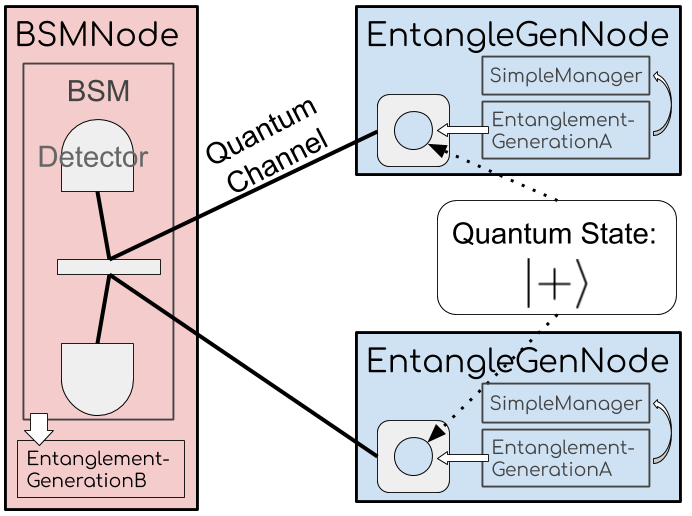
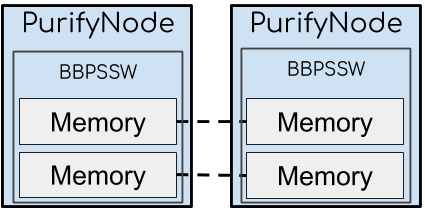
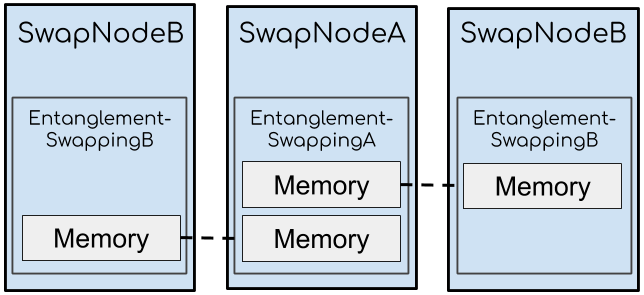

Chapter 3: Entanglement Management¶
In previous chapters, we introduced the usage of hardware models. In this chapter, we will use protocols in the entanglement management module to control these hardware devices and change the entanglement state of quantum memories. We will also use a simple manager protocol to control the entanglement generation protocols. We will show
how to use
EntanglementGenerationA(Barret-Kok generation protocol) to entangle memories on different nodeshow to use
BBPSSW(BBPSSW purification protocol) to improve the fidelity of entanglementhow to use
EntanglementSwappingAandEntanglementSwappingB(swapping protocol) to extend the distance of entanglement
Example: Use EntanglementGenerationA and BSMNode to generate entanglement¶

The above figure shows the network topology used in this example.
The network includes three nodes: one BSMNode node and two EntangleGenNode nodes.
The BSMNode node comes from SeQUeNCe.
We will build the custom node EntangleGenNode that inherits the Node class from SeQUeNCe.
Two quantum channels connect the BSMNode with the two EntangleGenNode.
Classical channels and nodes create a complete classical graph, which is not shown in the figure.
BSMNode includes:
Hardware: two detectors in a bell state measurement device (BSM) to record the arrival time of photons.
Software: the
EntanglementGenerationBprotocol to collect the arrival time of photons and notify theEntanglementGenerationAprotocols on the other nodes.
EntangleGenNode includes:
Hardware: one quantum memory in the |+⟩ state, prepared to entangle with the remote memory on the other node.
Software: the
EntanglementGenerationAprotocol to excite the controlled memory and determine the quantum state via messages fromEntanglementGenerationB; aSimpleManagerwhich uses theupdatefunction to get the state of the memory after the procedures inEntanglementGenerationA.
Step 1: Customize Node¶
We can import BSMNode from SeQUeNCe package and thus only need to define the EntangleGenNode class.
We also define our SimpleManager, which will create entanglement protocol instances and monitor their success.
The code for the EntangleGenNode and SimpleManager classes is shown below:
from sequence.topology.node import Node
from sequence.components.memory import Memory
from sequence.entanglement_management.generation import EntanglementGenerationA
class SimpleManager:
def __init__(self, own, memo_name):
self.own = own
self.memo_name = memo_name
self.raw_counter = 0
self.ent_counter = 0
def update(self, protocol, memory, state):
if state == 'RAW':
self.raw_counter += 1
memory.reset()
else:
self.ent_counter += 1
def create_protocol(self, middle: str, other: str):
self.own.protocols = [EntanglementGenerationA(self.own, '%s.eg' % self.own.name, middle, other,
self.own.components[self.memo_name])]
class EntangleGenNode(Node):
def __init__(self, name: str, tl: Timeline):
super().__init__(name, tl)
memo_name = '%s.memo' % name
memory = Memory(memo_name, tl, 0.9, 2000, 1, -1, 500)
memory.owner = self
memory.add_receiver(self)
self.add_component(memory)
self.resource_manager = SimpleManager(self, memo_name)
def init(self):
memory = self.get_components_by_type("Memory")[0]
memory.reset()
def receive_message(self, src: str, msg: "Message") -> None:
self.protocols[0].received_message(src, msg)
def get(self, photon, **kwargs):
self.send_qubit(kwargs['dst'], photon)
In this customized Node class, we overwrite the init, receive_message, and get methods.
The init method will be used to reset the local memory at the beginning of the simulation.
The get method directs received photons from the memory to the attached quantum channel, as discussed in the previous tutorial.
Finally, for the receive_message method, the node will receive a classical message msg from the source node src.
We also add a function create_protocol(self, middle: str, other: str) to the manager to create the local instance of the generation protocol.
The middle and other parameters declare the name of the BSMNode and EntangleGenNode, respectively, used for generating entanglement.
The constructor function of EntanglementGenerationA needs five arguments:
the node that holds the protocol instance
the identity (name) of the protocol instance
the name of the
BSMNodeinvolved in entanglement generationthe name of the remote
EntangleGenNodeinvolved in entanglement generationthe memory used for generating entanglement
Q&A¶
Q: Why is the SimpleManager necessary?
A: We have embedded code that calls the update function of a resource_manager into our current implementations of entanglement protocols.
We also need a protocol to track which hardware components of the local node should be used.
Q: Why is the EntanglementGenerationA object placed in the list EntangleGenNode.protocols?
A: The implementation of EntanglementGenerationA assumes it has been placed in the Node.protocols list when it starts.
Step 2: Create Network¶
As introduced in the previous chapter, we create nodes and channels to define the network. To avoid unnecessary errors, we will set the efficiency of our detectors to 1.
from sequence.kernel.timeline import Timeline
from sequence.topology.node import BSMNode
from sequence.components.optical_channel import QuantumChannel, ClassicalChannel
tl = Timeline()
node1 = EntangleGenNode('node1', tl)
node2 = EntangleGenNode('node2', tl)
bsm_node = BSMNode('bsm_node', tl, ['node1', 'node2'])
node1.set_seed(0)
node2.set_seed(1)
bsm_node.set_seed(2)
bsm = bsm_node.get_components_by_type("SingleAtomBSM")[0]
bsm.update_detectors_params('efficiency', 1)
qc1 = QuantumChannel('qc1', tl, attenuation=0, distance=1000)
qc2 = QuantumChannel('qc2', tl, attenuation=0, distance=1000)
qc1.set_ends(node1, bsm_node.name)
qc2.set_ends(node2, bsm_node.name)
nodes = [node1, node2, bsm_node]
for i in range(3):
for j in range(3):
cc= ClassicalChannel('cc_%s_%s'%(nodes[i].name, nodes[j].name), tl, 1000, 1e8)
cc.set_ends(nodes[i], nodes[j].name)
Step 3: Configure and Start the EntanglementGenerationA Protocol¶
First, we will use create_protocol to create the instance of the protocol on the node.
Before we start the protocol, we need to pair the protocols on the two nodes.
The function pair_protocol defined here uses two EntangleGenNode as the input and will pair all necessary protocols.
The protocols in EntangleGenNode.protocols are paired with the set_others method.
Now, the protocols are ready to start generating entanglement and we can start our experiment.
from sequence.entanglement_management.entanglement_protocol import EntanglementProtocol
def pair_protocol(node1: Node, node2: Node):
p1 = node1.protocols[0]
p2 = node2.protocols[0]
node1_memo_name = node1.get_components_by_type("Memory")[0].name
node2_memo_name = node2.get_components_by_type("Memory")[0].name
p1.set_others(p2.name, node2.name, [node2_memo_name])
p2.set_others(p1.name, node1.name, [node1_memo_name])
node1.resource_manager.create_protocol('bsm_node', 'node2')
node2.resource_manager.create_protocol('bsm_node', 'node1')
pair_protocol(node1, node2)
memory = node1.get_components_by_type("Memory")[0]
print('before', memory.entangled_memory, memory.fidelity)
# "before node1.memo {'node_id': None, 'memo_id': None} 0"
tl.init()
node1.protocols[0].start()
node2.protocols[0].start()
tl.run()
print('after', memory.entangled_memory, memory.fidelity)
# (if the generation fails) "after node1.memo {'node_id': None, 'memo_id': None} 0"
# (if the generation succeeds) "after node1.memo {'node_id': 'node2', 'memo_id': 'node2.memo'} 0.9"
The start method starts the protocol. The run mehtod starts the simulation.
Note that the start method must be called after the timeline init method.
After the simulation, we can observe two possible states of memory based on the result of entanglement generation.
If the protocol generates entanglement successfully, the Memory.entangled_memory will present information about the entangled memory.
The fidelity of entanglements equal 0.9, as set in the constructor function of Memory.
If the protocol fails, the fidelity of entanglement is 0.
Step 4: Try to Generate Entanglement Multiple Times¶
The mechanism of the Barrett-Kok generation protocol can achieve at most 50% success rate.
We can, however, set the protocol to try multiple times and observe the success rate of protocol.
We will use the Memory.reset() method to reset the state of quantum memories before restarting protocols.
tl.init()
for i in range(1000):
tl.time = tl.now() + 1e11
node1.resource_manager.create_protocol('bsm_node', 'node2')
node2.resource_manager.create_protocol('bsm_node', 'node1')
pair_protocol(node1, node2)
node1.protocols[0].start()
node2.protocols[0].start()
tl.run()
print("node1 entangled memories : available memories")
print(node1.resource_manager.ent_counter, ':', node1.resource_manager.raw_counter)
# (around 500:500; the exact number depends on the seed of numpy.random)
Example: Use BBPSSW to improve the fidelity of entanglement¶

The above figure shows the network topology of this example.
The network is composed of two PurifyNode nodes and one ClassicalChannel.
Two pairs of entangled memories are located at two nodes.
The BBPSSW purification protocol will consume one entanglement to improve the fidelity of the other entanglement.
Step 1: Customized Node¶
The custom PurifyNode class will inherit the Node class from SeQUeNCe.
Similar to EntangleGenNode, we need to define a SimpleManager and rewrite the receive_message method.
The kept_memo is the memory whose fidelity will be improved by the purification protocol.
If the protocol purifies the kept_memo successfully, we will keep the kept_memo.
Otherwise, we will discard it.
The meas_memo is the consumed memory.
We will always discard the meas_memo after the completion of the purification protocol.
We will also rewrite the code for the manager class to reflect our usage of two memories and the new purification protocol.
from sequence.entanglement_management.purification import BBPSSW
class SimpleManager:
def __init__(self, own, kept_memo_name, meas_memo_name):
self.own = own
self.kept_memo_name = kept_memo_name
self.meas_memo_name = meas_memo_name
self.raw_counter = 0
self.ent_counter = 0
def update(self, protocol, memory, state):
if state == 'RAW':
self.raw_counter += 1
memory.reset()
else:
self.ent_counter += 1
def create_protocol(self):
kept_memo = self.own.components[self.kept_memo_name]
meas_memo = self.own.components[self.meas_memo_name]
self.own.protocols = [BBPSSW(self.own, 'purification_protocol', kept_memo, meas_memo)]
class PurifyNode(Node):
def __init__(self, name: str, tl: Timeline):
super().__init__(name, tl)
kept_memo_name = '%s.kept_memo' % name
meas_memo_name = '%s.meas_memo' % name
kept_memo = Memory('%s.kept_memo' % name, tl, 0.9, 2000, 1, -1, 500)
meas_memo = Memory('%s.meas_memo' % name, tl, 0.9, 2000, 1, -1, 500)
self.add_component(kept_memo)
self.add_component(meas_memo)
self.resource_manager = SimpleManager(self, kept_memo_name, meas_memo_name)
def receive_message(self, src: str, msg: "Message") -> None:
self.protocols[0].received_message(src, msg)
The constructor function of BBPSSW requires four arguments:
The node that holds the protocol instance
The identity of the protocol instance
The memory used as the
kept_memothe memory used as the
meas_memo
Step 2: Create Network¶
We can now use the code below to create the simulated network.
tl = Timeline()
node1 = PurifyNode('node1', tl)
node2 = PurifyNode('node2', tl)
node1.set_seed(0)
node2.set_seed(1)
cc0 = ClassicalChannel('cc0', tl, 1000, 1e9)
cc1 = ClassicalChannel('cc1', tl, 1000, 1e9)
cc0.set_ends(node1, node2.name)
cc1.set_ends(node2, node1.name)
Step 3: Manually Set Entanglement States¶
To avoid unnecessary modules and operations, we will manually modify the memories to create an entangled state.
First, we use the Memory.reset() to reset the state of memory.
Then, we assign the identity of the node and memory to which we are entangled in Memory.entangled_memory (implemented as a dictionary {'node_id': str, 'memo_id': str}).
Finally, we set the fidelity of entanglement.
def entangle_memory(memo1: Memory, memo2: Memory, fidelity: float):
memo1.reset()
memo2.reset()
memo1.entangled_memory['node_id'] = memo2.owner.name
memo1.entangled_memory['memo_id'] = memo2.name
memo2.entangled_memory['node_id'] = memo1.owner.name
memo2.entangled_memory['memo_id'] = memo1.name
memo1.fidelity = memo2.fidelity = fidelity
kept_memo_1 = node1.components[node1.resource_manager.kept_memo_name]
kept_memo_2 = node2.components[node2.resource_manager.kept_memo_name]
meas_memo_1 = node1.components[node1.resource_manager.meas_memo_name]
meas_memo_2 = node2.components[node2.resource_manager.meas_memo_name]
entangle_memory(kept_memo_1, kept_memo_2, 0.9)
entangle_memory(meas_memo_1, meas_memo_2, 0.9)
Step 4: Configure and Start BBPSSW Protocol¶
Similar to the previous example, we create, pair, and start the protocols.
def pair_protocol(node1: Node, node2: Node):
p1 = node1.protocols[0]
p2 = node2.protocols[0]
kept_memo_1_name = node1.resource_manager.kept_memo_name
meas_memo_1_name = node1.resource_manager.meas_memo_name
kept_memo_2_name = node2.resource_manager.kept_memo_name
meas_memo_2_name = node2.resource_manager.meas_memo_name
p1.set_others(p2.name, node2.name, [kept_memo_2_name, meas_memo_2_name])
p2.set_others(p1.name, node1.name, [kept_memo_1_name, meas_memo_1_name])
node1.resource_manager.create_protocol()
node2.resource_manager.create_protocol()
pair_protocol(node1, node2)
tl.init()
node1.protocols[0].start()
node2.protocols[0].start()
tl.run()
print(kept_memo_1.name, kept_memo_1.entangled_memory, kept_memo_1.fidelity)
# 'node1.kept_memo {'node_id': 'node2', 'memo_id': 'node2.kept_memo'} 0.9263959390862945'
# or 'node1.kept_memo {'node_id': 'node2', 'memo_id': 'node2.kept_memo'} 0.9'
print(meas_memo_1.name, meas_memo_1.entangled_memory, meas_memo_1.fidelity)
# 'node1.meas_memo {'node_id': 'node2', 'memo_id': node2.meas_memo'} 0.9'
After the simulation, the first print statement produces one of two possible outputs. The first output (the first comment) shows a successful purification operation. The second output (the second comment) shows the failure of purification. Note that the entanglement fields and fidelity will be reset by the resource manager, discussed in the next chapter. The success rate of purificaiton depends on the fidelity of entanglement. Entanglements with higher fidelities have a higher success rate.
Note: The BBPSSW protocol assumes the fidelity of the two entangled pairs are the same.
Note: You can inherit the BBPSSW class and overwrite BBPSSW.success_probability(F: float)
and BBPSSW.improved_fidelity(F: float) to customize the success probability and fidelity improvement of the purification protocol.
Step 5: Try to Purify Entanglement Multiple Times¶
We can run the purification protocol multiple times to observe the state of memory with different purification results.
tl.init()
for i in range(10):
entangle_memory(kept_memo_1, kept_memo_2, 0.9)
entangle_memory(meas_memo_1, meas_memo_2, 0.9)
node1.resource_manager.create_protocol()
node2.resource_manager.create_protocol()
pair_protocol(node1, node2)
node1.protocols[0].start()
node2.protocols[0].start()
tl.run()
print(kept_memo_1.name, kept_memo_1.entangled_memory, kept_memo_1.fidelity)
print(meas_memo_1.name, meas_memo_1.entangled_memory, meas_memo_1.fidelity)
Example: Use EntanglementSwappingA and EntanglementSwappingB to Extend Entanglement¶

The above figure shows the network topology of this example.
The network consists of two SwapNodeB and one SwapNodeA connected by classical channels.
The SwapNodeB node has:
Hardware: one quantum memory entangled with one memory on
SwapNodeASoftware:
EntanglementSwappingBswapping protocol
The SwapNodeA node has:
Hardware: two entangled memories
Software:
EntanglementSwappingAswapping protocol
The swapping protocols on the three nodes use these two pairs of entangled memories to generate the entanglement between two SwapNodeB nodes.
After the swapping protocol, the two memories on SwapNodeA are no longer entangled with the memories on each SwapNodeB.
Step 1: Customized Node¶
The code below shows the implementation of SwapNodeA.
The left_memo is the memory entangled with the memory on the left SwapNodeB.
The right_memo is the memory entangled with the memory on the right SwapNodeB.
class SwapNodeA(Node):
def __init__(self, name: str, tl: Timeline):
super().__init__(name, tl)
left_memo_name = '%s.left_memo' % name
right_memo_name = '%s.right_memo' % name
left_memo = Memory(left_memo_name, tl, 0.9, 2000, 1, -1, 500)
right_memo = Memory(right_memo_name, tl, 0.9, 2000, 1, -1, 500)
self.add_component(left_memo)
self.add_component(right_memo)
self.resource_manager = SimpleManager(self, [left_memo_name, right_memo_name])
def receive_message(self, src: str, msg: "Message") -> None:
self.protocols[0].received_message(src, msg)
The code for SwapNodeB is identical to SwapNodeA but with only one memory:
class SwapNodeB(Node):
def __init__(self, name: str, tl: Timeline):
super().__init__(name, tl)
memo_name = '%s.memo' % name
memo = Memory(memo_name, tl, 0.9, 2000, 1, -1, 500)
self.add_component(memo)
self.resource_manager = SimpleManager(self, [memo_name])
def receive_message(self, src: str, msg: "Message") -> None:
self.protocols[0].received_message(src, msg)
We reuse the SimpleManager defined in the previous example to create the SwapNodeA and SwapNodeB protocols.
We will thus add a field for storing multiple memory names and generate swapping protocols.
The EntanglementSwappingA constructor requires six arguments:
The node that holds the protocol instance
The identity of protocol instance
The first memory used for the swapping operation
The second memory used for the swapping operation
The success rate of swapping
The degradation rate of swapping
While the constructor for EntanglementSwappingA only requires three arguments:
The node that holds the protocol instance
The identity of protocol instance
The memory having its entanglement swapped
We will set up the manager so that it automatically creates the right type of swapping potocol depending on the local node.
Note: the fidelity of entanglement after swapping is f1 * f2 * fd, where f1, f2 denote the fidelity of the two entangled pairs and fd denotes the degradation rate.
from sequence.entanglement_management.swapping import EntanglementSwappingA, EntanglementSwappingB
class SimpleManager:
def __init__(self, own, memo_names):
self.own = own
self.memo_names = memo_names
self.raw_counter = 0
self.ent_counter = 0
def update(self, protocol, memory, state):
if state == 'RAW':
self.raw_counter += 1
memory.reset()
else:
self.ent_counter += 1
def create_protocol(self):
if type(self.own) is SwapNodeA:
left_memo = self.own.components[self.memo_names[0]]
right_memo = self.own.components[self.memo_names[1]]
self.own.protocols = [EntanglementSwappingA(self.own, 'ESA', left_memo, right_memo, 1, 0.99)]
else:
memo = self.own.components[self.memo_names[0]]
self.own.protocols = [EntanglementSwappingB(self.own, '%s.ESB' % self.own.name, memo)]
Step 2: Create Network¶
We create the three nodes and connect them with classical channels.
tl = Timeline()
left_node = SwapNodeB('left', tl)
right_node = SwapNodeB('right', tl)
mid_node = SwapNodeA('mid', tl)
left_node.set_seed(0)
right_node.set_seed(1)
mid_node.set_seed(2)
nodes = [left_node, right_node, mid_node]
for i in range(3):
for j in range(3):
cc = ClassicalChannel('cc_%s_%s' % (nodes[i].name, nodes[j].name), tl, 1000, 1e9)
cc.set_ends(nodes[i], nodes[j].name)
Step 3: Manually Set Entanglement State and Start Protocol¶
We will reuse the code for entangle_memory from the previous examples to configure the states of hardware and software.
The pair_protocol function is slightly more complicated, as there are more nodes to deal with.
Because we set the success probability to 1, we can guaruntee a successful result after running the simulation.
The fidelity of entanglement after swapping will be 0.9*0.9*0.99=0.8019.
def pair_protocol(node1, node2, node_mid):
p1 = node1.protocols[0]
p2 = node2.protocols[0]
pmid = node_mid.protocols[0]
p1.set_others(pmid.name, node_mid.name,
[node_mid.resource_manager.memo_names[0], node_mid.resource_manager.memo_names[1]])
p2.set_others(pmid.name, node_mid.name,
[node_mid.resource_manager.memo_names[0], node_mid.resource_manager.memo_names[1]])
pmid.set_others(p1.name, node1.name, [node1.resource_manager.memo_names[0]])
pmid.set_others(p2.name, node2.name, [node2.resource_manager.memo_names[0]])
left_memo = left_node.components[left_node.resource_manager.memo_names[0]]
right_memo = right_node.components[right_node.resource_manager.memo_names[0]]
mid_left_memo = mid_node.components[mid_node.resource_manager.memo_names[0]]
mid_right_memo = mid_node.components[mid_node.resource_manager.memo_names[1]]
entangle_memory(left_memo, mid_left_memo, 0.9)
entangle_memory(right_memo, mid_right_memo, 0.9)
for node in nodes:
node.resource_manager.create_protocol()
pair_protocol(left_node, right_node, mid_node)
tl.init()
for node in nodes:
node.protocols[0].start()
tl.run()
print(left_memo.entangled_memory)
# {'node_id': 'right', 'memo_id': 'right.memo'}
print(mid_left_memo.entangled_memory)
# {'node_id': None, 'memo_id': None}
print(mid_right_memo.entangled_memory)
# {'node_id': None, 'memo_id': None}
print(right_memo.entangled_memory)
# {'node_id': 'left', 'memo_id': 'left.memo'}
print(left_memo.fidelity)
# 0.8019000000000001